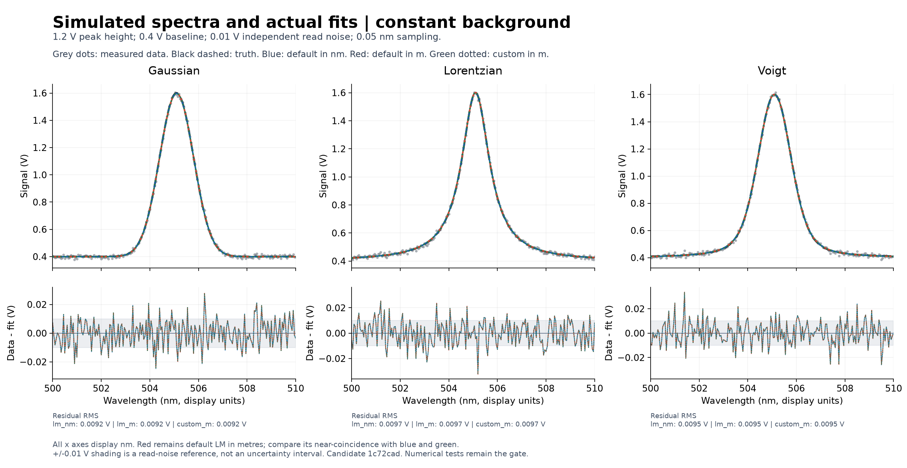
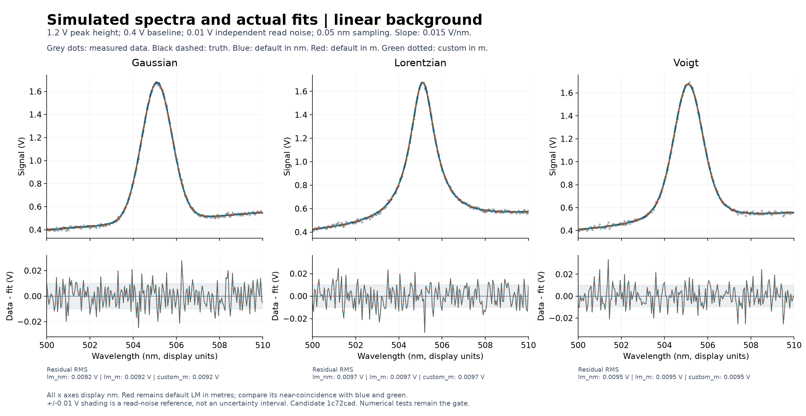
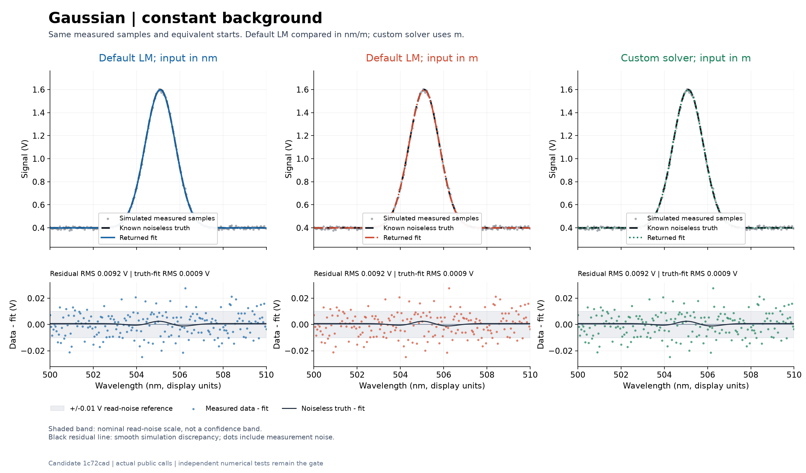
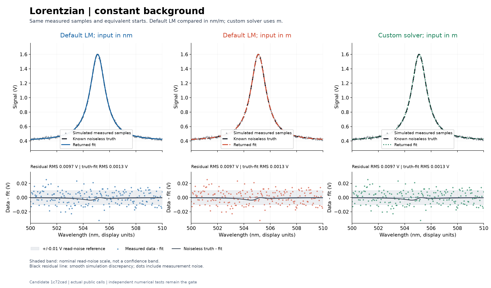
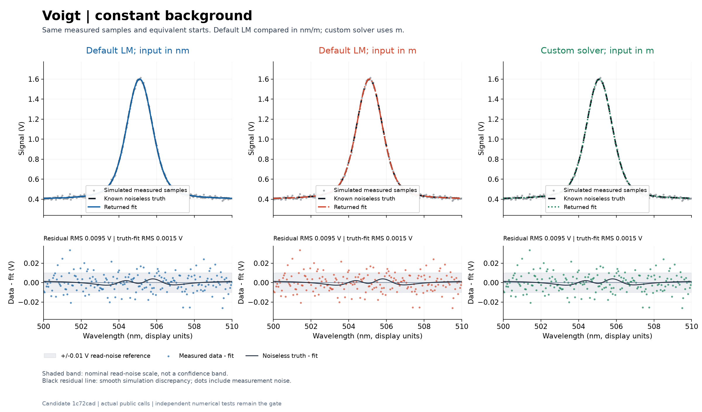
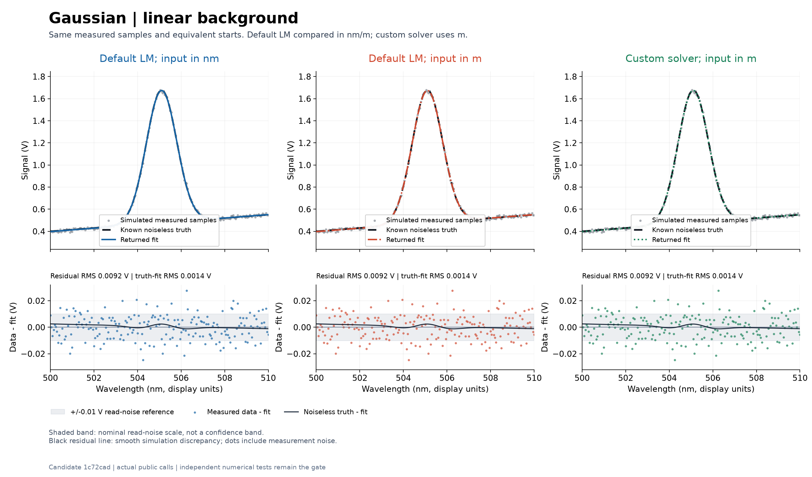
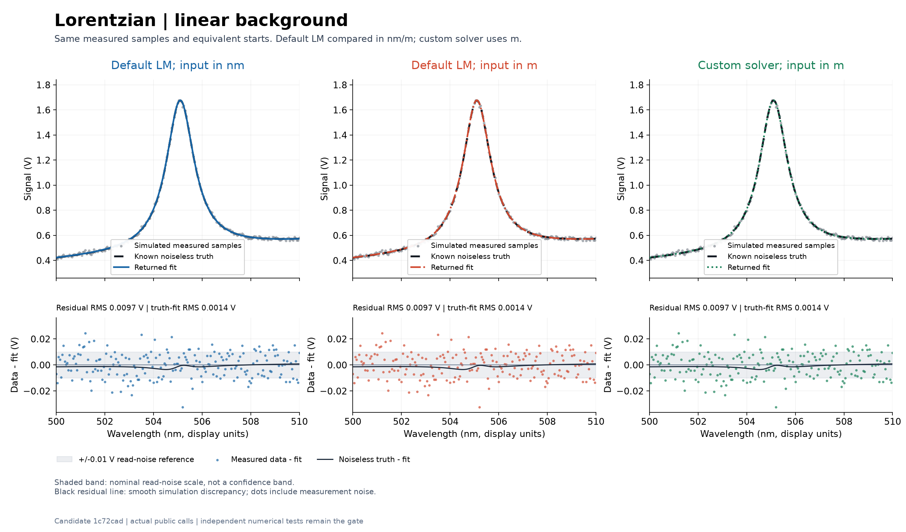
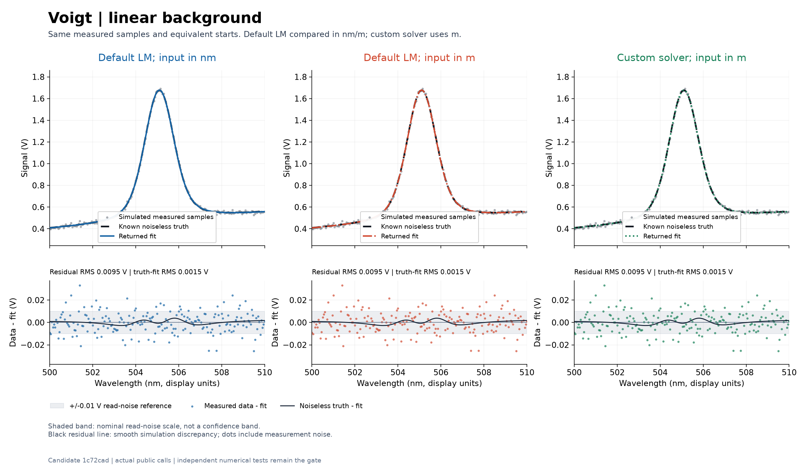

Does the fit look right?
Six resolved, positive spectra: Gaussian, Lorentzian and Voigt, each with a constant or gently sloping background. The component height is 1.2 V, the background starts at 0.4 V, and independent additive read noise has a 0.01 V standard deviation. Samples are 0.05 nm apart, from 500 to 510 nm.
The same voltage samples and physically equivalent peak guesses are supplied in nanometres (nm) and metres (m). Every displayed wavelength and returned width is converted to nm for comparison. The plotted signal includes the background; the component amplitude is its own height.
The recorded default Levenberg-Marquardt (LM) fits in nm and m, and the real custom solver in m, nearly coincide. Red denotes default LM with metre input. All columns use the same measured voltage samples and equivalent starts. These preserved examples are visual gut checks, not acceptance tests. They were generated during preparation 1c72cad, before later tests/docs-only corrections; they were not rerun for those later candidates.
Grey dots are the simulated measurement. The black dashed curve is the known noiseless truth. A good fit tracks that curve, rather than chasing individual noisy points.
Compare both unit choices for noise around zero and any systematic shape. Detail plots also show the smooth noiseless-truth minus fit discrepancy.
Blue uses default LM with nm input. Red uses default LM with m input. Green uses a real custom solver with m input. The parameter tables all use V and nm.
Constant background

Linear background
The slope is 0.015 V/nm: only a 0.15 V increase across the full 10 nm range.

Individual fits and returned parameters
Expand a case to compare three actual calls side by side. Within each detailed case, all three residual panels use the same vertical scale. Red remains default LM with metre input; near-coincidence with blue and green is the observed result. The shaded +/-0.01 V band is a read-noise reference, not a confidence interval.
Gaussian / constant background

| Parameter | Known truth | Default LM; input in nm | Default LM; input in m | Custom solver; input in m |
|---|---|---|---|---|
| Height (V) | 1.2 | 1.198306 | 1.198306 | 1.198306 |
| Centre (nm) | 505.1 | 505.100374 | 505.100374 | 505.100374 |
| Sigma (nm) | 0.7 | 0.701656 | 0.701656 | 0.701656 |
| Background at 500 nm (V) | 0.4 | 0.39926 | 0.39926 | 0.39926 |
| Residual root mean square (V) | Reference only | 0.009216 | 0.009216 | 0.009216 |
| Call outcome | Generating model | Returned fit | Returned fit | Returned fit |
Lorentzian / constant background

| Parameter | Known truth | Default LM; input in nm | Default LM; input in m | Custom solver; input in m |
|---|---|---|---|---|
| Height (V) | 1.2 | 1.20051 | 1.20051 | 1.20051 |
| Centre (nm) | 505.1 | 505.098714 | 505.098714 | 505.098714 |
| Gamma, half width (nm) | 0.7 | 0.702292 | 0.702292 | 0.702292 |
| Background at 500 nm (V) | 0.4 | 0.400147 | 0.400147 | 0.400147 |
| Residual root mean square (V) | Reference only | 0.009681 | 0.009681 | 0.009681 |
| Call outcome | Generating model | Returned fit | Returned fit | Returned fit |
Voigt / constant background

| Parameter | Known truth | Default LM; input in nm | Default LM; input in m | Custom solver; input in m |
|---|---|---|---|---|
| Height (V) | 1.2 | 1.202866 | 1.202866 | 1.202866 |
| Centre (nm) | 505.1 | 505.099091 | 505.099091 | 505.099091 |
| Sigma (nm) | 0.55 | 0.534551 | 0.534551 | 0.534551 |
| Gamma, half width (nm) | 0.3 | 0.324428 | 0.324428 | 0.324428 |
| Background at 500 nm (V) | 0.4 | 0.397815 | 0.397815 | 0.397815 |
| Residual root mean square (V) | Reference only | 0.009467 | 0.009467 | 0.009467 |
| Call outcome | Generating model | Returned fit | Returned fit | Returned fit |
Gaussian / linear background

| Parameter | Known truth | Default LM; input in nm | Default LM; input in m | Custom solver; input in m |
|---|---|---|---|---|
| Height (V) | 1.2 | 1.198266 | 1.198266 | 1.198266 |
| Centre (nm) | 505.1 | 505.099951 | 505.099951 | 505.099951 |
| Sigma (nm) | 0.7 | 0.701607 | 0.701607 | 0.701607 |
| Background at 500 nm (V) | 0.4 | 0.397462 | 0.397462 | 0.397462 |
| Background slope (V/nm) | 0.015 | 0.015364 | 0.015364 | 0.015364 |
| Residual root mean square (V) | Reference only | 0.009157 | 0.009157 | 0.009157 |
| Call outcome | Generating model | Returned fit | Returned fit | Returned fit |
Lorentzian / linear background

| Parameter | Known truth | Default LM; input in nm | Default LM; input in m | Custom solver; input in m |
|---|---|---|---|---|
| Height (V) | 1.2 | 1.200534 | 1.200534 | 1.200534 |
| Centre (nm) | 505.1 | 505.099013 | 505.099013 | 505.099013 |
| Gamma, half width (nm) | 0.7 | 0.702365 | 0.702365 | 0.702365 |
| Background at 500 nm (V) | 0.4 | 0.401219 | 0.401219 | 0.401219 |
| Background slope (V/nm) | 0.015 | 0.01478 | 0.01478 | 0.01478 |
| Residual root mean square (V) | Reference only | 0.00966 | 0.00966 | 0.00966 |
| Call outcome | Generating model | Returned fit | Returned fit | Returned fit |
Voigt / linear background

| Parameter | Known truth | Default LM; input in nm | Default LM; input in m | Custom solver; input in m |
|---|---|---|---|---|
| Height (V) | 1.2 | 1.202911 | 1.202911 | 1.202911 |
| Centre (nm) | 505.1 | 505.099221 | 505.099221 | 505.099221 |
| Sigma (nm) | 0.55 | 0.534445 | 0.534445 | 0.534445 |
| Gamma, half width (nm) | 0.3 | 0.324628 | 0.324628 | 0.324628 |
| Background at 500 nm (V) | 0.4 | 0.398266 | 0.398266 | 0.398266 |
| Background slope (V/nm) | 0.015 | 0.014904 | 0.014904 | 0.014904 |
| Residual root mean square (V) | Reference only | 0.009463 | 0.009463 | 0.009463 |
| Call outcome | Generating model | Returned fit | Returned fit | Returned fit |